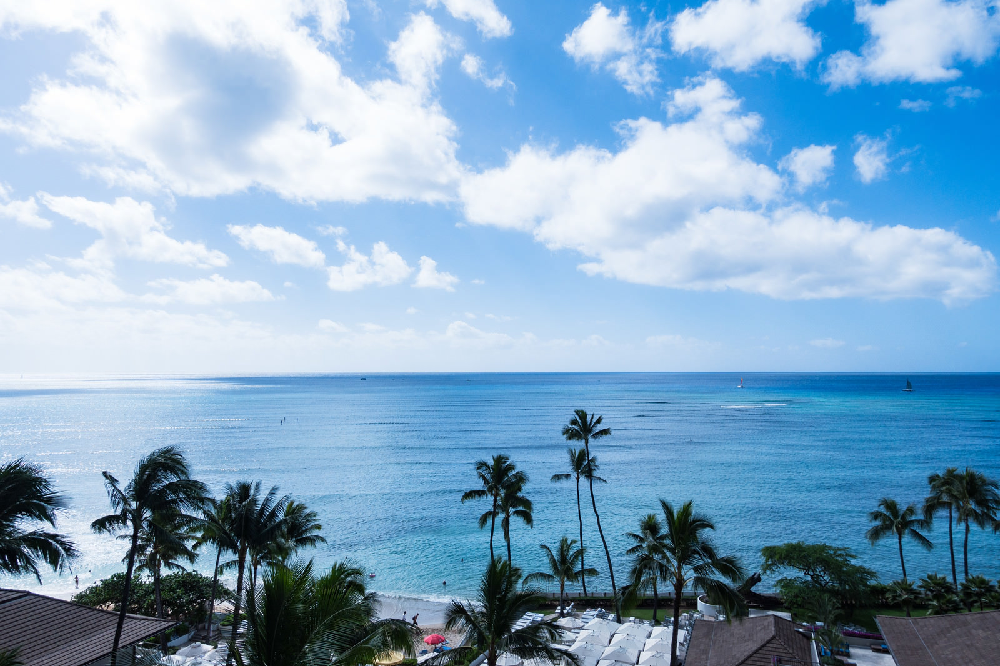
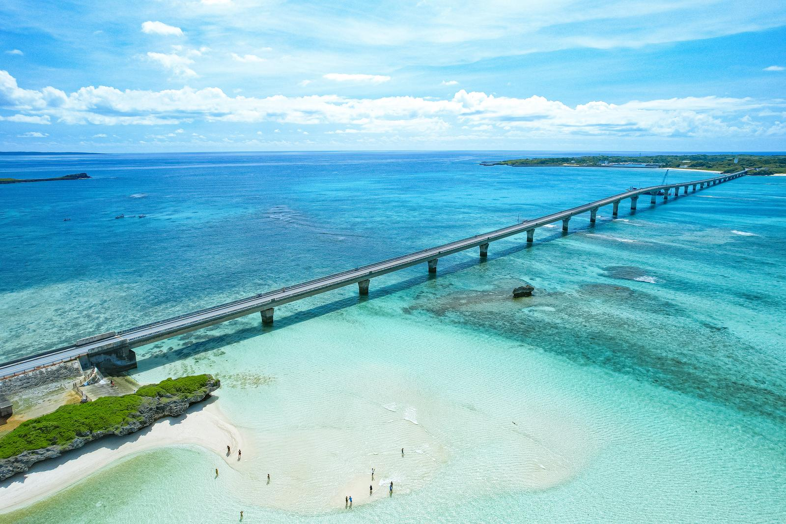
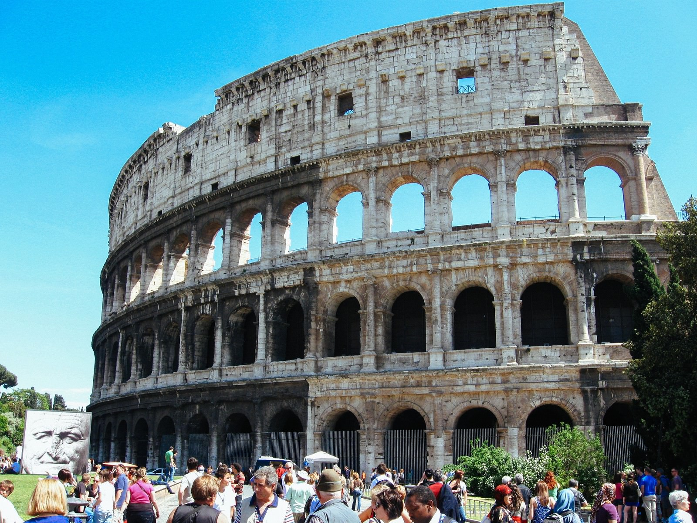

南国の楽園・ワイキキビーチ――エメラルドの海と白砂が広がる、癒しと感動のハワイの絶景

ハワイ・ワイキキのビーチは、世界中の人々を魅了する楽園の象徴です。透き通るようなエメラルドグリーンの海と、どこまでも続く白い砂浜が織りなす景色は、まさに夢のような美しさ。穏やかな波が寄せる浜辺では、サーフィンや日光浴を楽しむ人々の笑顔があふれています。背後にはダイヤモンドヘッドが雄大にそびえ、青空とのコントラストが一層の開放感を演出。心地よい海風に包まれながら、時間を忘れて過ごす至福のひとときを感じられる場所です。
READ MORE
エメラルドの海に架かる絶景――宮古島・伊良部大橋がつなぐ青と青の世界

宮古島を代表する絶景スポット、伊良部大橋。全長約3.5キロにもおよぶこの橋は、コバルトブルーからエメラルドグリーンへと移り変わる美しい海の上を一直線に伸びています。車窓から見える光景は、まるで空と海のあいだを走っているかのよう。潮風が心地よく、時間を忘れてしまうほどの爽快感に包まれます。太陽の光に輝く海面と、島々を結ぶ雄大な橋の姿は、訪れる人々の心に深い感動を残す、日本屈指のトロピカルビューです。
READ MORE
古代ローマの息吹を今に伝える――壮大なコロッセオと活気あふれる観光の街並み

イタリア・ローマの象徴として名高いコロッセオは、約2000年前に建てられた円形闘技場。石造りの外壁に刻まれた時の痕跡が、古代ローマの栄華と人々の情熱を今に伝えています。周囲には世界中から訪れる観光客の笑顔と熱気があふれ、歴史と現代が交差する独特の活気に包まれています。青空の下にそびえるその荘厳な姿は、どの角度から見ても圧倒的な存在感を放ち、訪れる人の心を深く揺さぶる歴史遺産です。
READ MORE